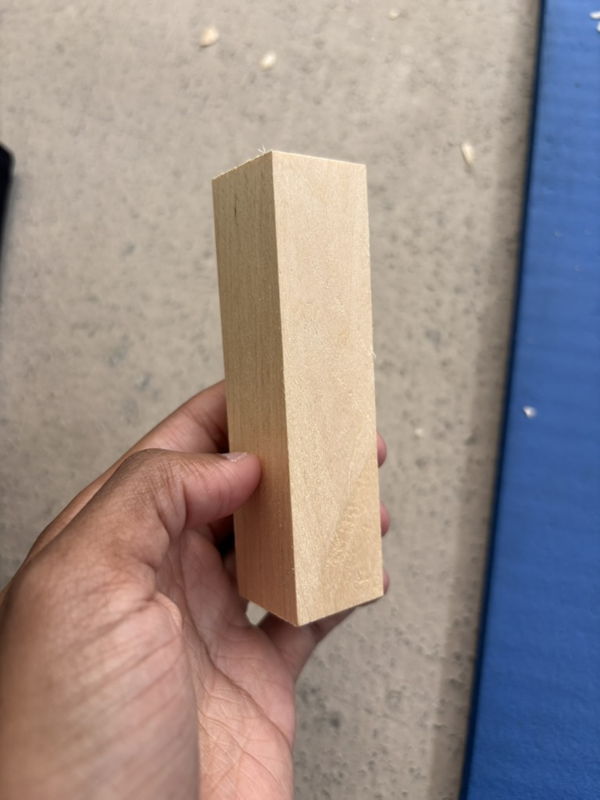
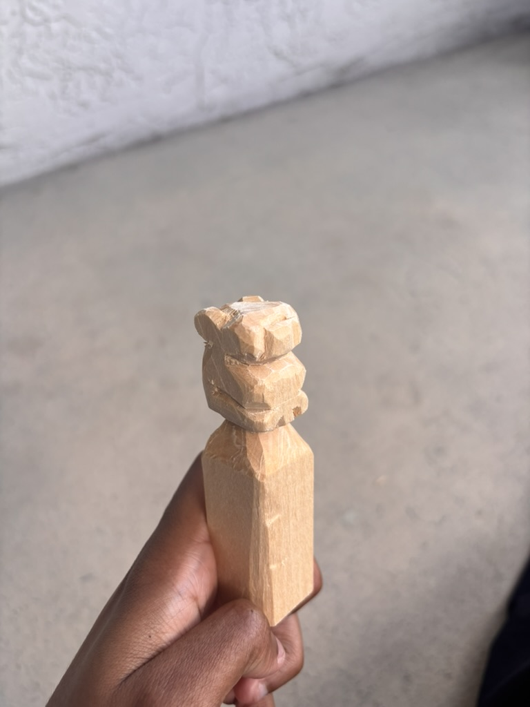
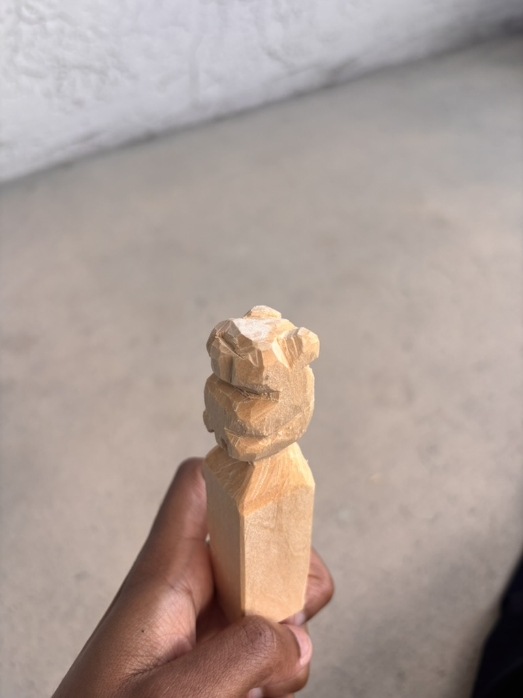
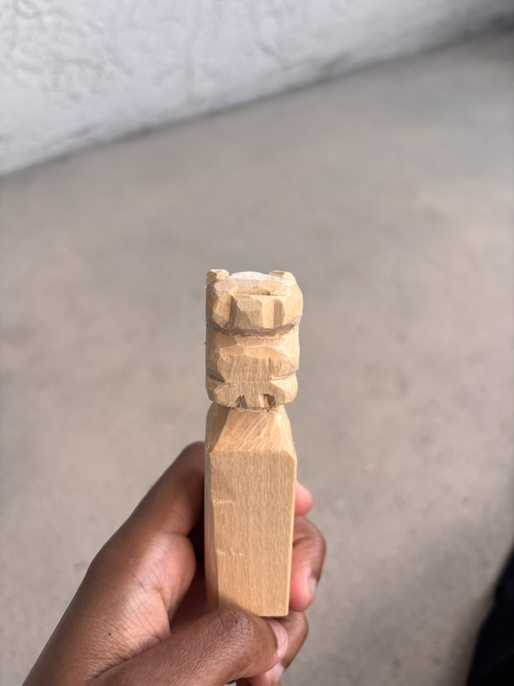

Heyo! Welcome to my ultra-basic website. Why is this website so basic? Well, as I grow as a programmer, researcher, and physicist, my hope is that my projects do the same and in a sense, scale as a I scale. So, if this feels too "drab" and elementary for you, check back in a year or so and it might pique your interest. I am currently a triple major studying Finance, Mathematics and Physics, with Physics and Math being recently acquired majors. I'm currently in pursuit of figuring out what I want to specialize in for graduate school, so stick around for that.
Currently, my time is split between training to make my return to Division I college basketball, gaining experience to do undergraduate physics research in the summer of 2026 and beyond, as well as curating my own sort of "curriculum" to research topics and things i'm interested in. I'm currently taking a "gap year", and taking courses at my local community college for the Fall and Spring semester, here is a table of courses i've taken thus far along with my corresponding grades.
| Spring 2026 Semester | |||
|---|---|---|---|
| Course Code | Course Full Name | Final Grade | Takeaways / Note To Future Self |
| MAP2302 | Differential Equations | TBA | TBA |
| CHM1046 | General Chemistry II | TBA | TBA |
| AST 1002 | Descriptive Astronomy | TBA | There is so much value in knowing relatively nothing about a topic, and being able to learn from a multitude of resources. |
| COP 1220-2 | Intro To Programming in C | TBA | Similar to physics, classical machines have really paved the way for quantum machines. Therefore, pay special attention to the past, to make an imapct on the future. |
| Fall 2025 Semester | |||
|---|---|---|---|
| Course Code | Course Full Name | Final Grade | Takeaways / Note To Future Self |
| MAC2313 | Calculus with Analytic Geometry III | 87.3% (B) | Don't wait for instruction, get ahead when possible |
| PHY2048 | Gen. Physics W/ Calculus I | 82.81% (B) | Forgotten HW can make or break your grade |
| PHY2048L | Physics I Lab | 99.7% (A) | Use coursework/written work as an opportunity to learn new skills (I.e., LaTeX) |
| CHM1046 | General Chemistry I | 82.1% (B) | Utilize tutoring/resources no matter how "good" your grade looks, haha. |
| MAS2103 | Linear Algebra (Non - Proof Based) | 93.1% (A) | Linear algebra is the foundation for alot of basic to complex topics, master it. |
| Summer 2025 Semester | |||
|---|---|---|---|
| Course Code | Course Full Name | Final Grade | Takeaways / Note To Self |
| MAC2312 | Calculus with Analytic Geometry II | 78% (C) | Don't take math in an accelerated summer course.. ever again. lol |
In the Fall and Summer of 2025, I worked very closely with Professor Szabi of Mercer University's Economics department, and Adam Kobor, managing director of investments at NYU on a research paper where details will be written later. The most important thing I learned from this experience is that research, similar to life, is not linear, but rewards those who are persistent and diligent. Our paper was published oficially in mid-to late December, the published print can be found here.
Because I feel placing all my current and past reads will be a bit hectic, here is what I am currently reading/ textbooks im self studying. Anything literature from the past or reserved for the future can be found on my Goodreads profile at the bottom of the page!
| Current Reads As Of January 8th 2026 | ||
|---|---|---|
| Book Title | Author | Intention Behind Reading |
| Careless People | Sarah Wynn-Williams | I'm currently trying to become more aware about personal media consumption, and the motives of companies controlling algorithms |
| Introduction To Mechanics | Kleppner and Kolenkow | Preparation for more rigorous undergraduate questions upon my return to a 4-year university physics program |
| Introduction To Electrodynamics | David J. Griffiths | Preparation/ extra problems for PHY2049 E&M concepts for the Spring of 2026 and beyond |
| Modern Classical Mechanics | Helliwell and Sahakian | Im involved ina. weekly high undergraduate/ post graduate physics study group that's been going chapter by chapter through the book since August of 2025 |
| Most Recent Completed Reads | ||
|---|---|---|
| Book Title | Author | Intention Behind Reading |
| Navy Seal Discipline | Dominic Mann | Became enamored by Navy Seal training, Hell Week specifically. |
| Never Finished | David Goggins | I read 'Cant Hurt Me' my junior year of college. It was pretty eye-opening and exposed my unintentional complacency. So, once time allowed, I wanted to proceeed to reading this books aswell. |
For 2026, one of my resolutions was to step outside of my comfort zone and partake in more right brain-centered activities. As I began thinking, I enjoyed the idea of wood-carving and whittling, it was simple enough to take a blade to wood, but with dilligent practice, could evolve into so much more. Also because I enjoyed Cletus Spucklers from the Simpson's insane whittling skills and small quote: "I whittles what I sees". Here is the kit I first bought when I began, and here is the link to the very first video I watched and the corresponding attempt I made to replicate it.
As of January 8th, 2026, I have started wood carving and will place pictures of my finished projects below.



